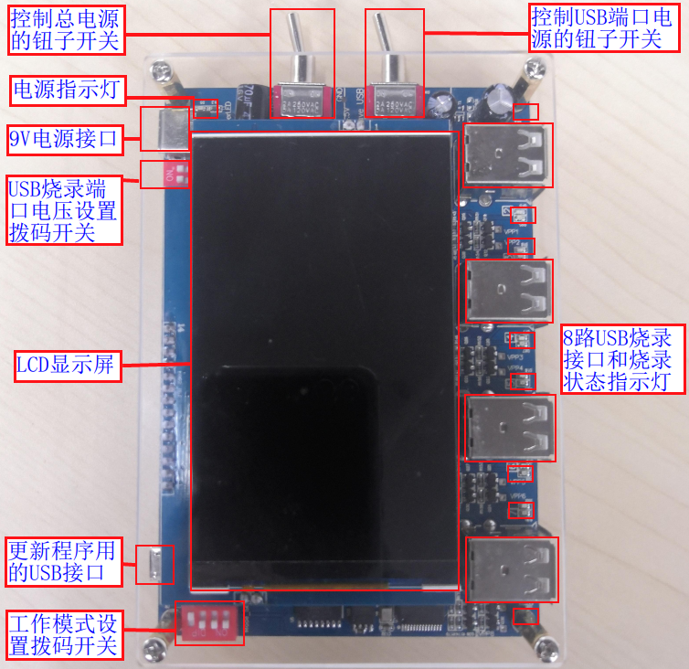
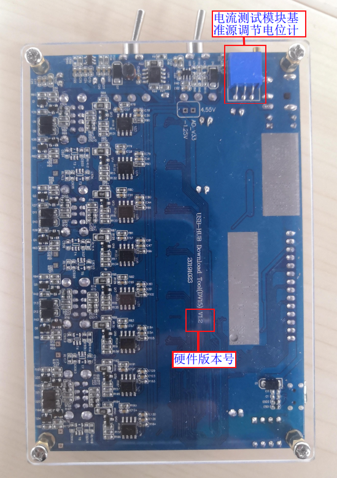
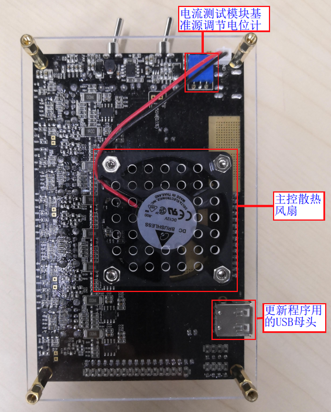
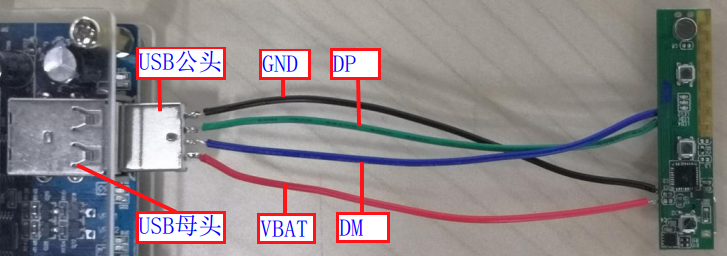
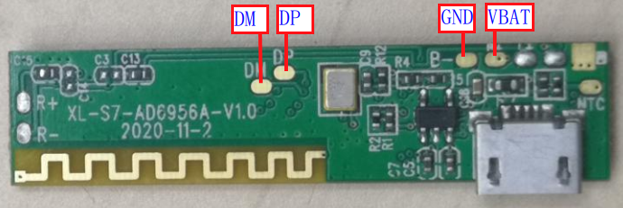
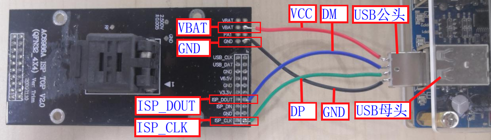
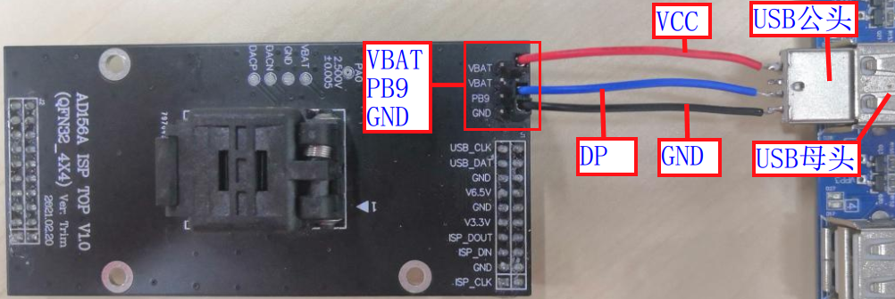

2.1. Programmer Overview
2.1.1. Functional description
The Jieli 1-to-8 programmer (also commonly called a burner or programmer) is mainly used for offline programming (no connection to a PC is needed during programming) of firmware into chips already mounted on devices.
During development, one programmer can program the firmware of 1 to 8 device chips; in mass production, combined with programming fixtures, N programmers can program N*8 device chips simultaneously, either manually or automatically.
The main functions of the 1-to-8 programmer are:
Firmware programming (supports programming internal/external flash, and programming/upgrading with a battery attached)
Firmware verification
Chip blank check
Authorized programming count limit
Bluetooth address auto-increment
Programming of third-party data such as authentication codes
Programming of custom resource files
Chip performance test
Frequency offset calibration, MIC test
Customization of special functions
Important
For detailed instructions on the programmer's functions and the configuration related to each function, see the corresponding sections!
2.1.2. Programmer package contents
No. |
Module type |
Components |
Description |
|---|---|---|---|
1 |
Programmer main unit |
Main control board |
Controls the operation of the programmer |
9V power input |
Main power supply port of the programmer |
||
Power indicator light |
Lights up when power is supplied and the main power switch is turned on |
||
Main power toggle switch |
Turns the main power on and off |
||
USB port power toggle switch |
Turns the power of the USB ports on and off |
||
Mode setting DIP switch |
Sets the working mode, such as programming, verification, |
||
USB programming port voltage DIP switch |
Sets the output voltage of the USB programming ports |
||
USB update port |
Used to upgrade the programmer firmware and |
||
8 USB programming ports |
8 programming channels, through which the programmer connects to the device chips over USB |
||
8-channel automatic programming control interface |
Lets a handler control the automatic programming |
||
8 programming status indicator lights |
Indicate the programming status of each channel |
||
LCD display |
Shows programming information, programming status, |
||
Cooling fan |
Cools the main controller (V2.0 hardware version programmer) |
||
Potentiometer |
Adjusts the reference source of the current test module |
||
2 |
USB data cable |
Connects the programmer to a PC |
|
3 |
Power adapter |
Use a power supply rated 9.0V, 2.0A or above |
2.1.3. Introduction to the programmer main unit
2.1.3.1. Differences between programmer versions
This document describes the commonly used V1.2 and V2.0 hardware versions of the programmer. The basic functions of the two hardware versions are the same; the main differences are as follows:
Hardware version |
Differences |
|---|---|
V1.2 |
The output voltage of the USB programming ports is set with a DIP switch; 4.2V and 5.0V settings are supported |
The USB update port uses a USB micro connector |
|
V2.0 |
The output voltage of the USB programming ports is configured in the PC tool |
The USB update port uses a USB TYPE-C connector and a USB female connector |
|
Adds the automatic programming control interface for handlers |
|
Adds a cooling fan for the main controller; some hardware modules have been modified |
2.1.3.2. V1.2 hardware version programmer
The front of the V1.2 hardware version programmer main unit is shown in Front of the V1.2 programmer main unit.

Front of the V1.2 programmer main unit
The back of the V1.2 hardware version programmer main unit is shown in Back of the V1.2 programmer main unit.

Back of the V1.2 programmer main unit
2.1.3.3. V2.0 hardware version programmer
The front of the V2.0 hardware version programmer main unit is shown in Front of the V2.0 programmer main unit.

Front of the V2.0 programmer main unit
The back of the V2.0 hardware version programmer main unit is shown in Back of the V2.0 programmer main unit.

Back of the V2.0 programmer main unit
2.1.4. Device programming wiring
2.1.4.1. Device chip programming wiring
Programming a device chip uses the VBAT, DM, DP and GND pins. Solder communication wires to these pins (in mass production, the device provides programming points for these pins, which are contacted by the probes of a fixture) and connect them to the corresponding pins of a USB male connector, then plug it into a USB female programming port of the 1-to-8 programmer to program the device chip firmware. This is shown in Device chip programming wiring and Contact points reserved on the device for mass-production programming.

Device chip programming wiring

Contact points reserved on the device for mass-production programming
2.1.4.2. Demo board and top board programming wiring
A demo board is also a device and usually has a USB connector brought out. Simply connect the demo board to a USB programming port with a USB cable to program the chip firmware.
When you need to program bare chips with the 1-to-8 programmer, you can use a demo board with a socket for the corresponding chip, or the top board of the 1-to-2 programmer for that chip. The wiring for programming through a top board is shown in Top board programming wiring.

Top board programming wiring
2.1.4.3. Special programming wiring for some device chips
The AD15N programming wiring is shown in AD15N programming wiring.

AD15N programming wiring
2.1.5. Programmer usage workflow
Programmer workflow
The general workflow for using the programmer is shown in Programmer workflow diagram.

Programmer workflow diagram
Workflow description
The following table describes the workflow.
Workflow
Description
Power on the programmer
The programmer firmware is already programmed before shipment,
so you can power on the programmer as soon as you receive itCheck or update the programmer firmware
The programmer firmware is the firmware of the main controller chip that controls the operation of the whole programmer.
Before programming the target chip firmware, be sure to check whether the current programmer firmware version is the latest;
if it is not, update to the latest
programmer firmware version through a remote upgrade (except in special cases),
otherwise some programming problems may occur.Check or update the target chip firmware
The target chip firmware means the fw, ufw and key files;
these files must be updated to the programmer and stored there so that the corresponding data can be programmed into
the target chip during programming, or used for verification and blank check;
when updating the target chip firmware, you also need to set the programming options
to enable functions such as resource programming and chip performance testsCheck or set the programmer working mode
Working modes include programming, verification, blank check, current test, etc.;
be sure to confirm the programmer's current working mode to avoid programming problemsProgram the device chip firmware manually or automatically
Manual programming means programming by plugging and unplugging devices by hand, or by pressing a fixture onto the devices
to make contact; automatic programming means that the programming of the device chips is controlled by an automatic programming handler
2.1.6. Glossary
Programmer: also called a writer or programming device. A tool used to write data into programmable integrated circuits (such as microcontrollers, flash memory, OTP, etc.). In Jieli documents, tool interfaces, displays and so on, the terms
burn(烧录) andwrite(烧写) mean the same thing (programming).
Blank chip: a chip that has not been programmed since leaving the factory; usually this means that the chip's flash, hardware storage media, etc. contain no data.
Programmer firmware: the firmware that controls the operation of the whole programmer.
Target chip firmware: executable files such as fw and ufw files generated by building the SDK (software development kit). They can be programmed into the chip with the programmer, where they run and control the operation of the whole product.
Offline programming: programming that does not require a PC. With the 1-to-8 programmer, the target chip firmware is first deployed from a PC to the programmer's memory and stored there; the chips are then programmed offline.
fw file: the executable program for the target chip, commonly used to program blank chips
ufw file: an executable program for the target chip, mainly used to update or upgrade the program of a device chip that can already run, for example via a test box, an SD card or a USB flash drive. Upgrading with the programmer is also supported.
key file: a key file. Once the key file is configured in download.bat in the download directory, the data of the generated fw/ufw files is encrypted. When the fw/ufw file data is programmed, the key file data is programmed into the chip's hardware storage medium, and when the chip runs, the hardware decrypts the program data so that the program can run. Each customer's programmer key file is unique: every customer has their own key file, and programming is possible only if the key file of the fw file matches the key file of the programmer. Only mass-production programmers support programming key files. You can also program the key file on its own first, and then program an fw file with the key file using other programming tools.